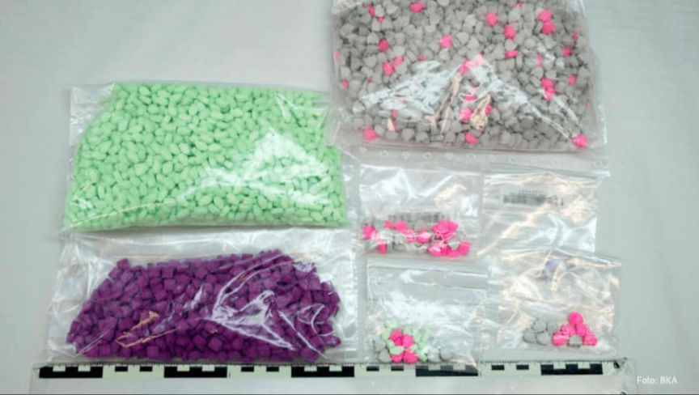
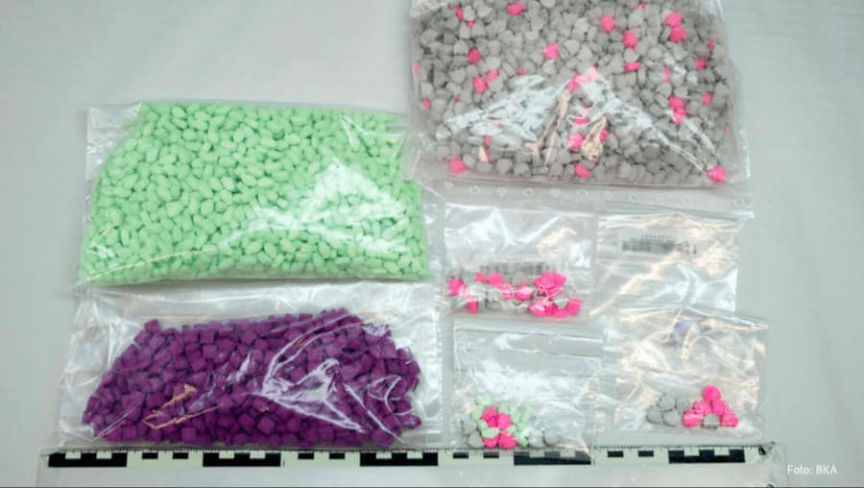

Second Chemical Revolution Trial Rescheduled Again
~2 min read | Published on 2022-02-08, tagged General-News using 274 words.
Officials in Germany rescheduled the second Chemical Revolution trial again. I do not see why the defendants are unable to reschedule the hearing indefinitely for the same reason.
In 2019, German law enforcement shut down Chemical Revolution, the largest darkweb drug shop for Germans. Police arrested 11 suspects as a part of the investigation. The second trial has been postponed for the second time.
The second trial, which began on January 10, 2022, involves five defendants. Some defendants are back in front of the court, but this will be their first appearance for others. We will apparently never know the outcome of the trial, though.

Last year, during the first trial, the co-creator of the shop essentially admitted everything about the drug trafficking operation. The court heard how the defendants had earned at least one million euros in cryptocurrency by selling kilograms of amphetamine, marijuana, cocaine, and ecstasy through the darkweb storefront. After the first trial, the court sentenced seven defendants to terms ranging from two years in prison to nine years in prison. The co-creator received the longest prison sentence.
A spokesperson for the district court in Giessen announced that the district court had postponed the second Chemical Revolution trial again. After finally starting on January 10, the court postponed it for some coronavirus reason on January 31, 2022. At the time, the court had scheduled the hearing for February 7, 2022.
A court spokesperson revealed that the district court rescheduled the hearing for a second time due to coronavirus. The spokesperson did not provide a date for the rescheduled trial.
Hopefully time served is considered during sentencing.
In 2019, German law enforcement shut down Chemical Revolution, the largest darkweb drug shop for Germans. Police arrested 11 suspects as a part of the investigation. The second trial has been postponed for the second time.
The second trial, which began on January 10, 2022, involves five defendants. Some defendants are back in front of the court, but this will be their first appearance for others. We will apparently never know the outcome of the trial, though.

The BKA circulated dozens pictures of the drugs seized during the investigation.
Last year, during the first trial, the co-creator of the shop essentially admitted everything about the drug trafficking operation. The court heard how the defendants had earned at least one million euros in cryptocurrency by selling kilograms of amphetamine, marijuana, cocaine, and ecstasy through the darkweb storefront. After the first trial, the court sentenced seven defendants to terms ranging from two years in prison to nine years in prison. The co-creator received the longest prison sentence.
A spokesperson for the district court in Giessen announced that the district court had postponed the second Chemical Revolution trial again. After finally starting on January 10, the court postponed it for some coronavirus reason on January 31, 2022. At the time, the court had scheduled the hearing for February 7, 2022.
A court spokesperson revealed that the district court rescheduled the hearing for a second time due to coronavirus. The spokesperson did not provide a date for the rescheduled trial.
Hopefully time served is considered during sentencing.